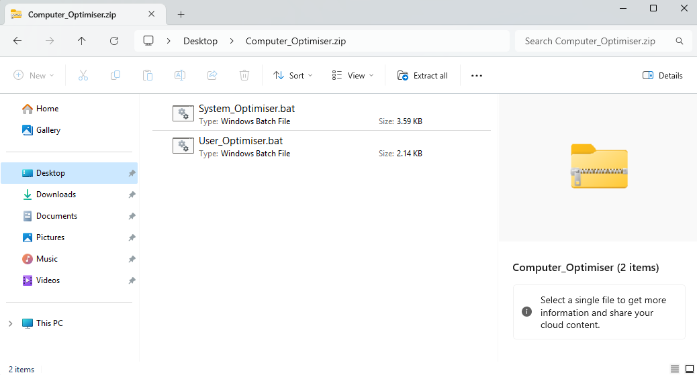
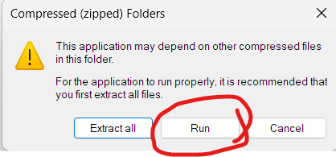
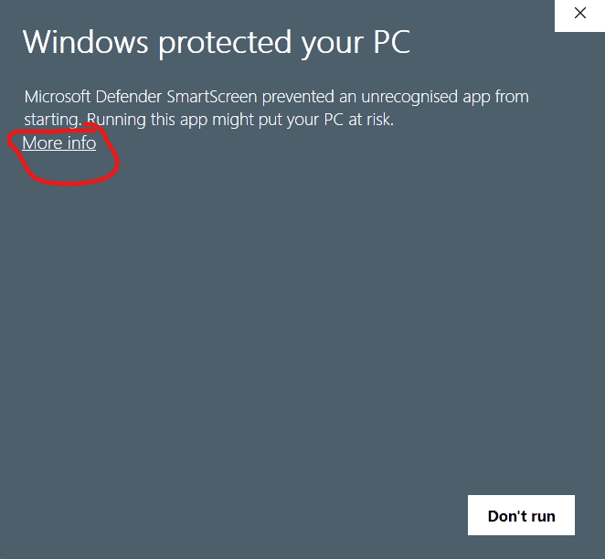
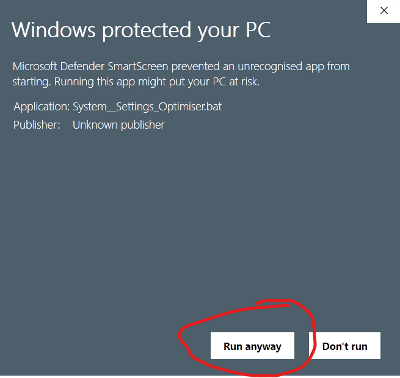
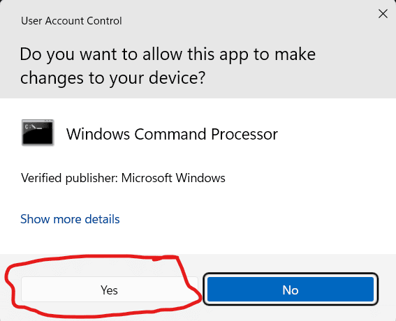

Download: Computer Optimiser Scripts

The Hackboto Tech Tips Computer Optimiser Scripts are really easy to use, just follow the instructions that you are provided with.
What Does the Script Do?
The Hackboto Tech Tips Computer Optimiser scripts are free scripts that remove old and unnecessary system files such as error logs, previous updates, etc, as well as old unnecessary files from your user account such as old application logs, and other junk files that will eat up your storage space.
Downloading the scripts
You can download the scripts using the download button below, this should start the download process.
Download Computer_Optimiser.zip
Once you have downloaded the file, you should have a .zip folder, this folder should contain the System_Optimiser.bat and User_Optimiser.bat scripts, if you do not see these scripts, it is possible that there is a problem with the download, if this happens try downloading again.
How do I use the scripts?
The scripts are really simple and easy to use, the script has been split into two files called "System_Optimiser.bat" and "User_Optimiser.bat".
System_Optimiser.bat: This script makes changes to your computer system, it will aim to repair system files that are corrupt and delete system junk such as old update files, outdated drivers, old logs, etc.
User_Optimiser.bat: This script will only apply changes to your user account; therefore, it does not require admin rights to run, you should run this script after running the "System_Optimiser.bat".
Step 1: Run System_Optimiser.bat
To Run the System_Optimiser you need to double click on it from within the folder mentioned in the previous section.
When running the System_Optimiser you might see this error, you need to click 'Run' to continue.
Sometimes the script will be blocked by the built-in antivirus, this is because the script was not created on your computer, if you see this error you will need to click on 'More info'.
After clicking on 'More info' you will need to click on 'Run anyway' to continue.
You will be asked to enter your Admin password at this stage, once you enter your password click yes. You might not need a password if you are using an Admin account to run the script.
By this stage the System_Optimiser should be running, you will be asked to read through the Terms and Conditions, enter 'Y' if you agree to the Terms and Conditions and would like to start the script, if you do not agree with the Terms and Conditions enter 'N' and the script will close, and no changes will be made to your computer.
Once the script has completed you will see a message telling you this, when you click OK, your computer will restart, and you can move onto step 2.
Step 2: Run User_Optimiser.bat
This script does not require admin rights; therefore, you can run it on both standard and admin accounts. If you have many user accounts on your computer, you will need to run the script on each account.
To run the script, you need to repeat the steps in step 1, however you need to run the User_Optimiser.bat instead of the System_Optimiser.bat.
Page Updated: 08/06/2024
Page Author: Hackboto